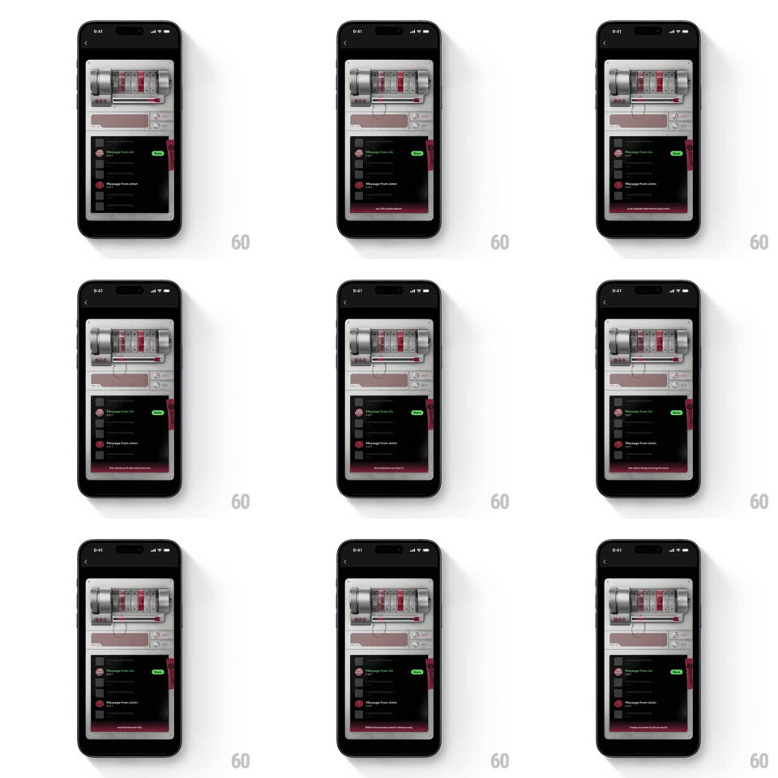

Media
Frame-by-frame

Rebuild this interaction 1:1: Spotify's fragment unlock - tap the 3D fragment and the skeuomorphic cassette player wakes: reels spin, the locked message row unlocks with a green badge, and the voice note plays.

Rebuild this interaction 1:1: Spotify's fragment unlock - tap the 3D fragment and the skeuomorphic cassette player wakes: reels spin, the locked message row unlocks with a green badge, and the voice note plays. ## Integration Integration: stack-agnostic spec - springs given as stiffness/damping, timed motions as duration + curve; map every value to your framework and animation library of choice. ## Scene A dark screen holding a 3D cassette deck (silver, tape window, twin reels, red accents) over a message list: rows like "Message from Jin" and "Message from Jimin", each with a status dot (red = locked) or a green "NEW"/playing badge when unlocked. A small 3D fragment floats near the deck as the key. ## Motion spec Pattern: tap-to-unlock - fragment triggers the cassette's mechanical wake and the row's state flip. - The fragment idles with a slow spin and bob (3.5s loop), gently pulsing its edge light to invite the tap. - On tap: the fragment shrinks into the deck (scale 1 -> 0, 300ms toward the tape window), the deck rocks subtly (rotateZ +/-2deg settle, spring ~300/16), and the reels spool up from rest to playback speed (400ms, ease-out). - Simultaneously the target row unlocks: the red dot crossfades to the green badge (200ms) which pops (scale 0.6 -> 1.15 -> 1, spring ~400/15), and the row title brightens. - Playback: reels spin continuously, a scrubber advances across the row (real-time with the audio), and a soft red VU glow flickers in the tape window with the voice's amplitude. - When the message ends, the reels spin down (300ms) and the badge flips from NEW to played state - the row stays unlocked forever. ## Calibration - Every state change is mechanical - the deck's parts (reels, window light, rock) carry the feedback, not toast text. - The unlock is single-tap and immediate - no hold, no confirmation; the fragment is the key. ## Reduced motion Fragment fades out; row crossfades to unlocked; reels shown spinning as a static blur. ## Don't miss - The red-to-green status language is the whole UI - dots and badges carry state, not labels. - Multiple locked rows stay in view - one fragment, one message; the rest tease.